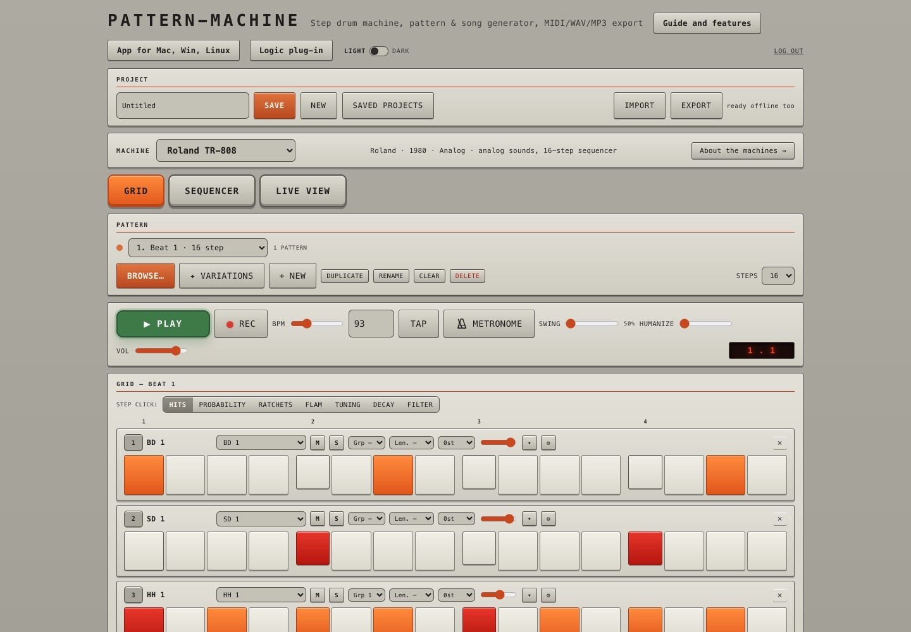
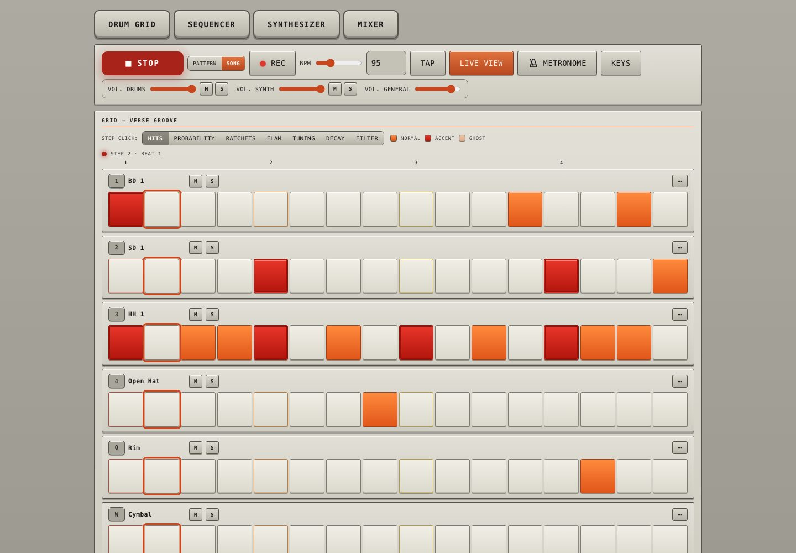
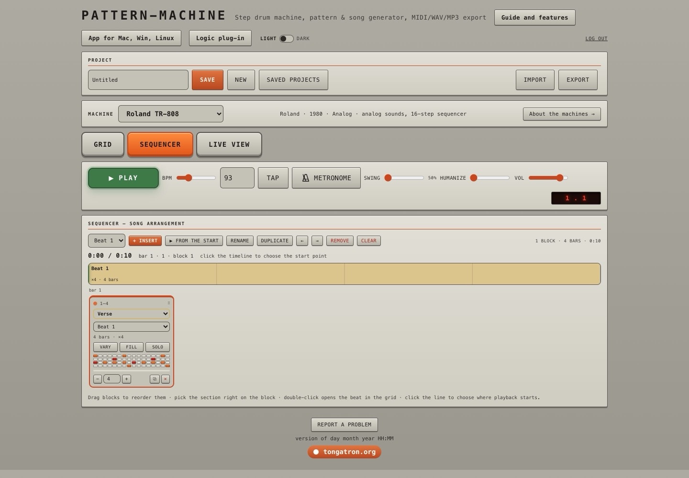
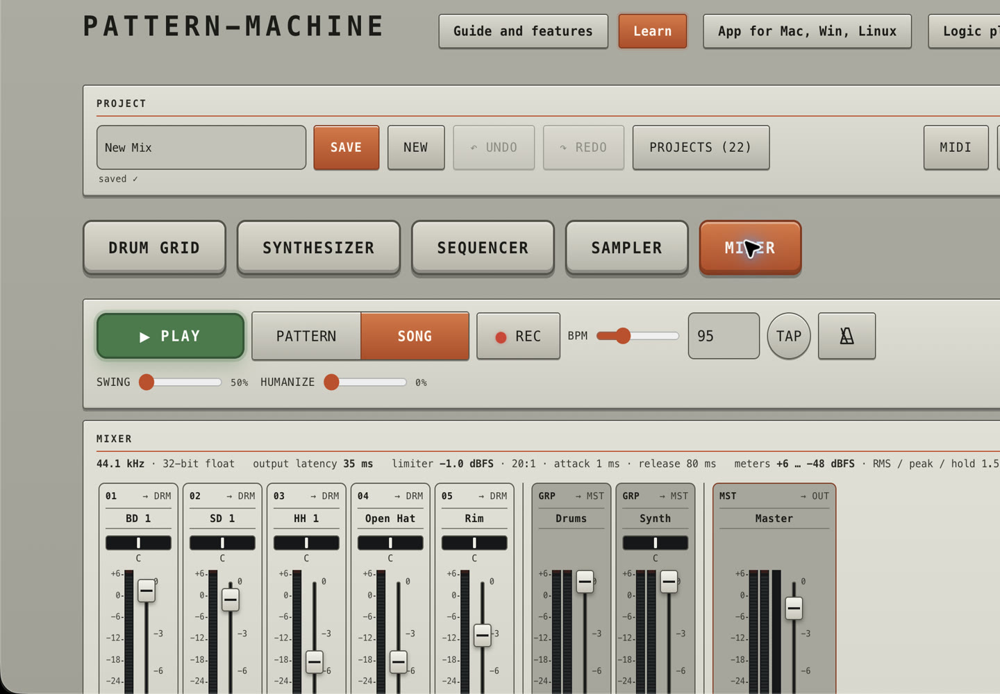
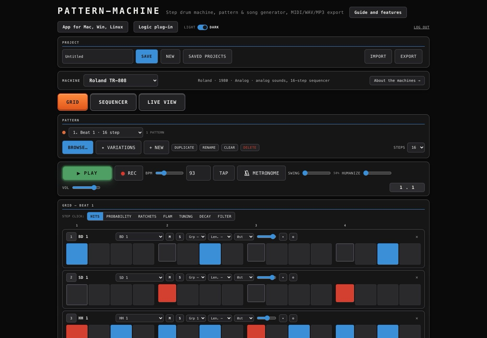
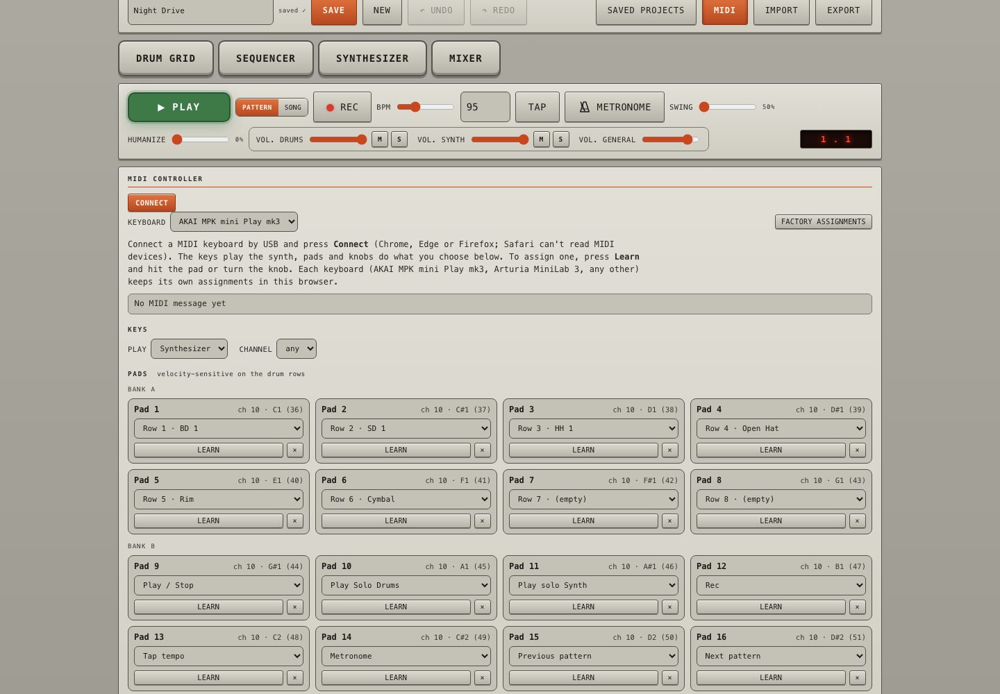
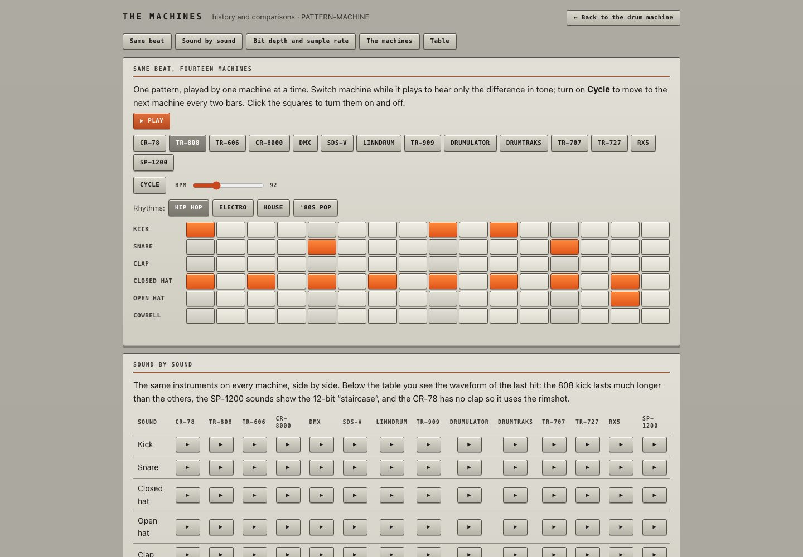
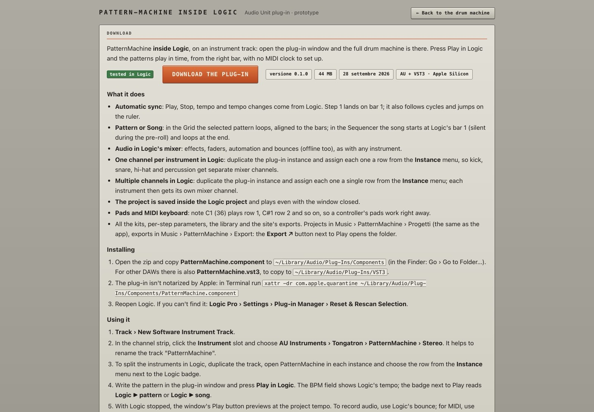
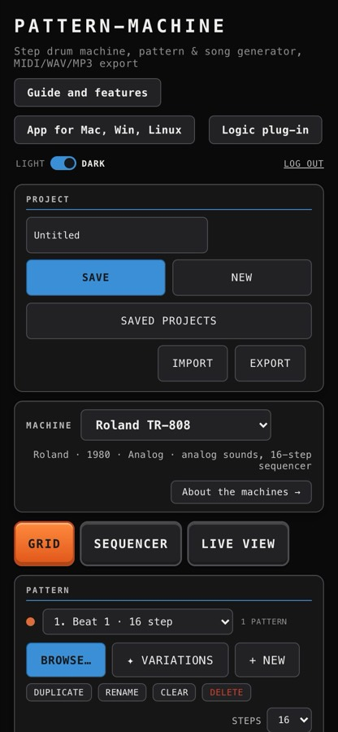

Pick a classic machine, generate a groove in one of 67 styles, shape it step by step or play it from your MIDI keyboard, chain patterns into a song and take it to your DAW as MIDI, WAV or MP3.
In the browser, on phones too · desktop app for macOS, Windows, Linux · AU / VST3 plug-in for Logic Pro
One interface, three forms
Nothing to install, works on any modern browser and on phones.
Everything in the site, plus a direct line to your DAW.
On an instrument track, in time with Logic's transport.
Features
67 styles in 10 families, from punk and post-punk to hip hop, dub, DnB, disco and club. One-click variations, automatic fills and 8 suggestions every time you change style.
8, 16 or 32 steps, 40–240 BPM, swing and humanize. Accents and ghost notes (right-click a step to pick one), per-step probability, ratchets, flam, pitch, decay and filter.
Half-time, sparse, new fill, ghost notes, syncopated kick and more: click one and hear it right away on your pattern, click again to go back to the original.
Chain patterns into verse, chorus and fill blocks with their own repeats. Drag to reorder, play from any point, solo a block or loop one pattern; the grid follows the song as it plays.
Just the grid, Play, Rec, tempo and metronome. Play from the keyboard or the pads and record hits while the pattern runs.
A synth part next to the drums, with its own engines, patterns and notes, in time with the beat and in its own lane of the song.
A strip for every row with fader, pan, meter, mute and solo, then drums, synth and master. Volumes, mute and solo for drums and synth stay at hand in the transport, and a limiter keeps the master under 0 dB.
Keys play the synth with velocity, pads trigger drums and transport, knobs move any parameter. Ready-made maps for AKAI MPK mini Play and Arturia MiniLab 3, plus Learn. How it works →
General MIDI or Logic kit mapping, WAV mix and stems, MP3, and ready-made project folders for Logic, Ableton Live and REAPER.
Drop in MIDI files, drum loops (kick, snare and hats detected from the audio), drum tabs, PatternTXT, Hydrogen, REAPER, Ableton Live and MusicXML files, project files or shared links.
Saved projects live in your account: the same in every browser, on your phone and in the desktop app. Saving works offline and syncs later; if a project changed elsewhere, your version is kept as a copy.
Light and dark themes styled after the SP-1200 front panel, 80 levels of undo and a metronome that runs even with the transport stopped.
MIDI keyboards
Connect a USB MIDI keyboard, open the MIDI tab and press Connect. It works in Chrome, Edge and Firefox (Safari can't read MIDI devices) and in the desktop app.
Pads: bank A plays the first 8 rows of the grid, bank B the transport. Keys: the synth. Any other keyboard gets the same layout, and everything can be reassigned with Learn.
The machines
Switching machine maps every row to the closest sound. Each kit shows maker, year and specs, and the machines page tells the history of each one.
Screenshots









The same drum machine on a phone: install it from the browser and it works offline too.
To your DAW
| Format | What you get |
|---|---|
| MIDI | Pattern or whole song, General MIDI or Logic SP-1200 kit mapping, with tempo, swing and ratchets |
| WAV + stems | Full mix and separate tracks, aligned to bar 1 |
| MP3 | For listening and sharing, in every browser |
| DAW package | A folder ready for Logic Pro, Ableton Live, REAPER and other DAWs |
| Live MIDI | Desktop app: virtual port and MIDI Clock sync with your DAW |
Access
Sign in to open the drum machine and download the desktop app and the Logic plug-in. New here? Registration takes a minute, or try it as a guest.